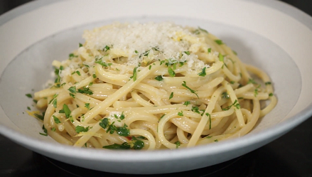

Pasta Gremolada

ingredienten
- 500g farfalle
- 1 el pijnboompitten
- 1 teentje knoflook
- 1 citroen chil
- 250g ricotta
- 1 handje bladpeterselie
bereiding
- kook de pasta beetgaar in een ruime hoeveelheid gezouten water
- Snipper de peterselie en de knoflook. Vermeng ze met de geraspte citroenschil.
- Schep de ricotta door de warme pasta en verdeel over de borden. Bestrooi met de gremola en werk af met de pijnboompitten.